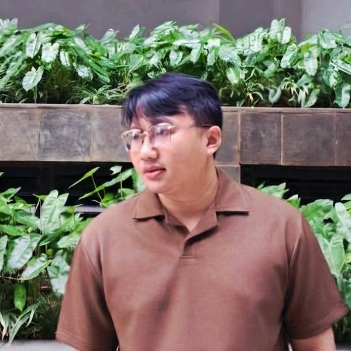

Initiator & Coordinator di Duduk Cerita
Dicki dulunya dikenal sebagai pribadi yang introvert, pemalu, dan tidak terlalu jago berkomunikasi. Lewat banyak bacaan buku, percobaan, dan kesalahan, ia belajar berbicara, mendengarkan, membaca bahasa tubuh, dan bernegosiasi, sampai akhirnya menjadi pribadi yang hangat, terbuka, dan punya banyak teman. Ia menyebut transformasi itu sebagai pencapaian terbesarnya.
Secara profesional, Dicki memulai karier di dunia F&B selama sekitar enam tahun. Setelah itu ia beberapa kali berpindah jalur, mulai dari freelance dan memimpin tim di industri wedding organizer, hingga akhirnya berkarier sebagai profesional Human Resources di industri teknologi.
Di luar pekerjaan, sebelumnya Dicki sempat mendampingi anak muda sebagai mentor di Mentor Sebaya, Peer Counselor, dan fasilitator Support Group. Berlatar belakang Psikologi dari Universitas Paramadina, ia menaruh perhatian besar pada kesehatan mental. Lewat podcast “Duduk Cerita”, ia membahas topik-topik psikologi dengan suasana santai agar kesadaran akan pentingnya menjaga kesehatan mental semakin luas. Ia juga menulis di Medium tentang psikologi, pengembangan diri, dan pengalaman kariernya.
“Hasil yang terlihat instan bagi orang lain sebenarnya lahir dari ribuan percobaan. Aha! momen tidak datang, melainkan diciptakan.”